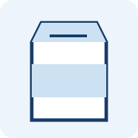
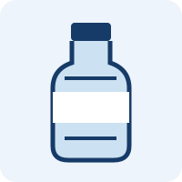
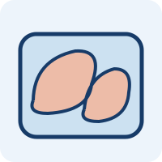

ドイツで暮らすための基礎
通貨はユーロ、首都はベルリンです。大学の制度や費用は州・大学・課程によって違います。都市名だけでなく、実際に通うキャンパスの住所を確かめましょう。日本との時差は通常8時間、夏時間中は7時間です。
生活費を予算にする
DAADが示す生活費の目安は月900〜1,200ユーロですが、都市・家賃・生活様式で変わります。ミュンヘンなどでは大学の案内する予算がこれを上回ることもあります。授業料・学期納付金・渡航費は別に計算してください。
- 毎月：家賃・光熱費・食費・健康保険・通信・交通・日用品
- 初期費用：航空券・敷金・仮住まい・家具・滞在手続き
- 大学の費用：授業料と学期納付金を分けて確認
- 生活費の目安と、滞在許可の資金証明額は別のものです。
よく買うものの物価リスト
買い物の予算をつかむための、ドイツのスーパー・ドラッグストアの掲載価格例です。全国平均や価格保証ではありません。容量・店舗・地域・特売で変わります。
確認日：2026年10月9日。米は2026年1月のLidl公表価格。円換算の参考レートは177.34円／EUR（ECB・同日）。イラストは商品カテゴリーのイメージで、各商品の実物写真ではありません。



買い物で覚えておくと便利
€1（約180円）・€10（約1,800円）で考えると目安がつかみやすくなります（計算しやすい丸めた目安）。Pfandは容器の預かり金、€/kg・€/Lは1kg・1Lあたりの比較価格です。米・パン・卵などは、容量と種類を揃えて比べましょう。
スーパーの自社ブランドと専門店・外食では価格が変わります。生活費は食品だけでなく、家賃・保険・交通も含めて予算化してください。
物価・賃金・為替
以下は公式統計です。物価上昇率は前年同月比であり、家賃や食費の金額そのものではありません。平均賃金は学生のアルバイト給与や手取り額ではありません。
統計を読み込み中です。
ユーロから円への換算は参考値です。実際の送金では手数料と適用レートが異なります。最低賃金には適用除外があり、職業訓練の報酬も別制度です。就労できる範囲は在留資格の条件を確認してください。
住居・保険・到着後
- 学生寮は入学許可と同時に確保されるとは限りません。大学のInternational Officeと地域のStudierendenwerkを早めに確認します。
- WGは共同住宅です。家賃に暖房等が含まれるか、敷金、解約期限、住民登録用書類を確認します。
- 入学時には健康保険の確認手続きが必要です。年齢・在籍形態によって保険の選択肢が異なります。
- 到着後は住民登録（Anmeldung）、滞在許可、銀行・携帯電話などを準備します。自治体ごとに予約と書類を確認しましょう。
経験談と制度を使い分ける
生活の工夫や準備の経験は、利用許可をいただいている「留学するならドイツ」 ↗も参考になります。本人の経験が、そのまま全員の制度上の条件になるわけではありません。
情報源
確認日：2026年10月9日。出願年度・課程・国籍によって条件が異なります。申請前に公式案内を確認してください。